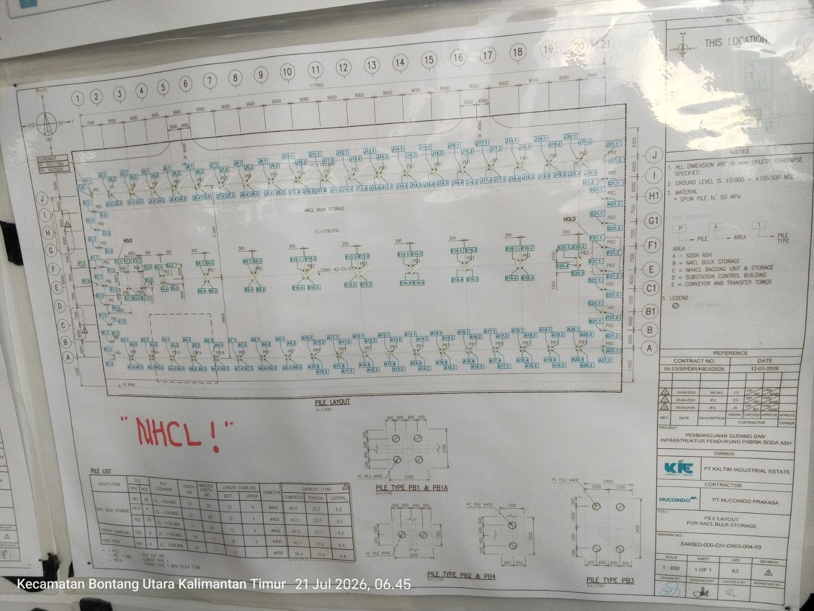
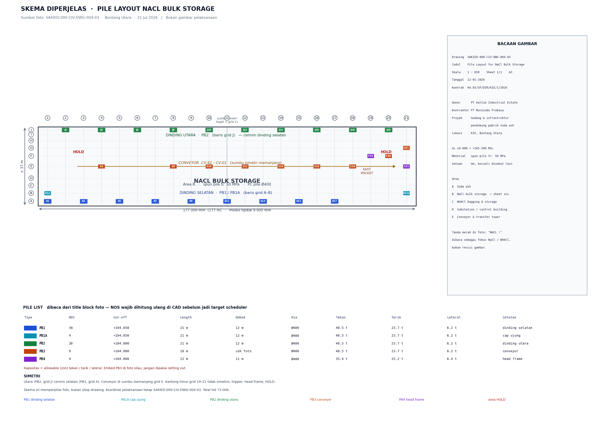
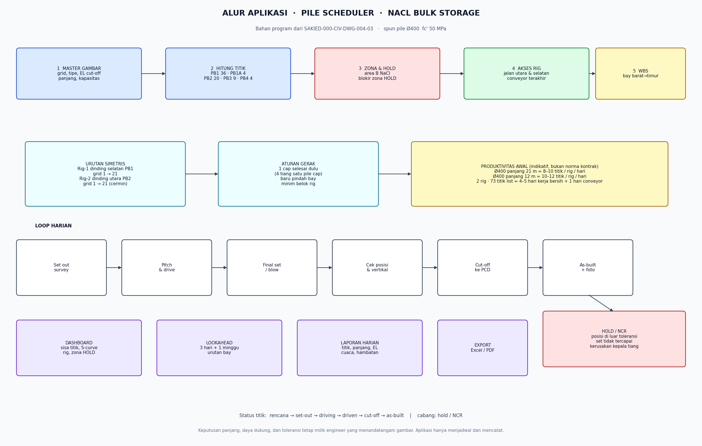

Demo lapangan · fajartris17.github.io
CCMP-01 · NaCl Bulk Storage
Spun pile Ø400, joint 12 m menjadi 22 m, 12 titik / 8 jam, 1 unit crane. Gambar SAKIED-000-CIV-DWG-004-03.
SchedulerJadwal 73 titik, 7 hari, centang progres di HP. Daily reportInput code titik, total meter, kendala, cuaca, kirim WhatsApp.Drawing
Foto shop drawing asli, lalu skema simetris. Bukan gambar pelaksanaan.


